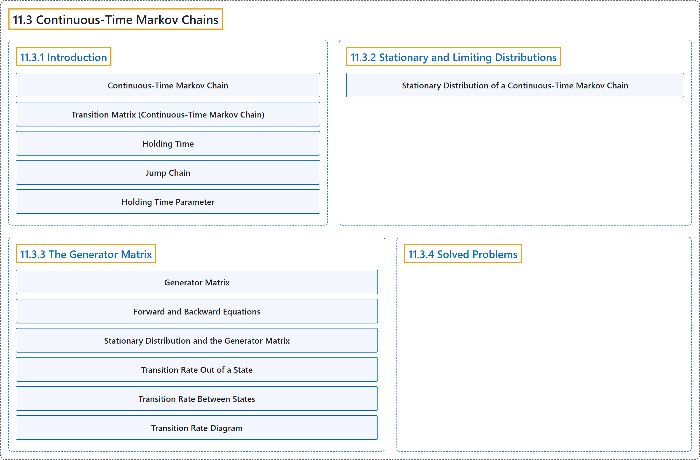

11.3 Continuous-Time Markov Chains
Classification

Glossary
| Term | Definition | 中文翻译 | Source |
|---|---|---|---|
| 11.3 Continuous-Time Markov Chains 连续时间马尔可夫链 |
(No definition) | （无定义） | Pishro-Nik, 2014, section 11.3 |
| 11.3.1 Introduction 介绍 |
(No definition) | （无定义） | Pishro-Nik, 2014, section 11.3.1 |
| Continuous-Time Markov Chain 连续时间马尔可夫链 |
"A continuous-time Markov chain \(X(t)\) is defined by two components: a jump chain, and a set of holding time parameters \(\lambda_i\)." | 连续时间马尔可夫链 \(X(t)\) 由两个部分定义：一个跳跃链，以及一组保持时间参数 \(\lambda_i\)。 | Pishro-Nik, 2014, section 11.3.1 |
| Transition Matrix (Continuous-Time Markov Chain) 转移矩阵（连续时间马尔可夫链） |
"For a continuous-time Markov chain, we define the transition matrix \(P(t)\). The \((i,j)\text{th}\) entry of the transition matrix is given by \(\begin{align*} P_{ij}(t)&=P(X(t)=j\vert X(0)=i). \end{align*}\)" | 对于连续时间马尔可夫链，我们定义转移矩阵 \(P(t)\)。转移矩阵的第 \((i,j)\) 个元素为 \(\begin{align*} P_{ij}(t)&=P(X(t)=j\vert X(0)=i). \end{align*}\) | Pishro-Nik, 2014, section 11.3.1 |
| Holding Time 保持时间 |
"Thus, the time that a continuous-time Markov chain spends in state \(i\) (called the holding time) will have \(Exponential(\lambda_i)\) distribution, where \(\lambda_i\) is a nonnegative real number." | 因此，连续时间马尔可夫链停留在状态 \(i\) 的时间（称为保持时间）服从 \(Exponential(\lambda_i)\) 分布，其中 \(\lambda_i\) 是一个非负实数。 | Pishro-Nik, 2014, section 11.3.1 |
| Jump Chain 跳跃链（嵌入马尔可夫链） |
"First, we have a discrete-time Markov chain, called the jump chain or the the embedded Markov chain, that gives us the transition probabilities \(p_{ij}\)." | 首先，我们有一个离散时间马尔可夫链，称为跳跃链或嵌入马尔可夫链，它给出转移概率 \(p_{ij}\)。 | Pishro-Nik, 2014, section 11.3.1 |
| Holding Time Parameter 保持时间参数 |
"Second, for each state we have a holding time parameter \(\lambda_i\) that controls the amount of time spent in each state." | 其次，对每个状态都有一个保持时间参数 \(\lambda_i\)，它控制在每个状态所花费的时间。 | Pishro-Nik, 2014, section 11.3.1 |
| 11.3.2 Stationary and Limiting Distributions 平稳分布与极限分布 |
(No definition) | （无定义） | Pishro-Nik, 2014, section 11.3.2 |
| Stationary Distribution of a Continuous-Time Markov Chain 连续时间马尔可夫链的平稳分布 |
"is said to be a stationary distribution for \(X(t)\) if" | 称为 \(X(t)\) 的平稳分布，若 | Pishro-Nik, 2014, section 11.3.2 |
| 11.3.3 The Generator Matrix 生成元矩阵 |
(No definition) | （无定义） | Pishro-Nik, 2014, section 11.3.3 |
| Generator Matrix 生成元矩阵 |
"For a continuous-time Markov chain, we define the generator matrix \(G\). The \((i,j)\text{th}\) entry of the transition matrix is given by \(\begin{align} \nonumber g_{ij} = \left\{ \begin{array}{l l} \lambda_i p_{ij} & \quad \textrm{ if }i \neq j \\ & \quad \\ -\lambda_i & \quad \textrm{ if }i = j \end{array} \right. \end{align}\)" | 对于连续时间马尔可夫链，我们定义生成元矩阵 \(G\)。转移矩阵的第 \((i,j)\) 个元素为 \(\begin{align} \nonumber g_{ij} = \left\{ \begin{array}{l l} \lambda_i p_{ij} & \quad \textrm{ if }i \neq j \\ & \quad \\ -\lambda_i & \quad \textrm{ if }i = j \end{array} \right. \end{align}\) | Pishro-Nik, 2014, section 11.3.3 |
| Forward and Backward Equations 前向方程与后向方程 |
"The forward equations state that \(P'(t)=P(t)G,\) which is equivalent to \(p'_{ij}(t)=\sum_{k \in S} p_{ik}(t) g_{kj}, \textrm{ for all }i,j \in S.\) The backward equations state that \(P'(t)=GP(t),\) which is equivalent to \(p'_{ij}(t)=\sum_{k \in S} g_{ik} p_{kj}(t), \textrm{ for all }i,j \in S.\)" | 前向方程表明 \(P'(t)=P(t)G,\)，它等价于 \(p'_{ij}(t)=\sum_{k \in S} p_{ik}(t) g_{kj}, \textrm{ for all }i,j \in S.\) 后向方程表明 \(P'(t)=GP(t),\)，它等价于 \(p'_{ij}(t)=\sum_{k \in S} g_{ik} p_{kj}(t), \textrm{ for all }i,j \in S.\) | Pishro-Nik, 2014, section 11.3.3 |
| Stationary Distribution and the Generator Matrix 平稳分布与生成矩阵 |
"Consider a continuous Markov chain \(X(t)\) with the state space \(S\) and the generator Matrix \(G\). The probability distribution \(\pi\) on \(S\) is a stationary distribution for \(X(t)\) if and only if it satisfies" | 考虑状态空间为 \(S\)、生成矩阵为 \(G\) 的连续马尔可夫链 \(X(t)\)。\(S\) 上的概率分布 \(\pi\) 是 \(X(t)\) 的平稳分布，当且仅当它满足 | Pishro-Nik, 2014, section 11.3.3 |
| Transition Rate Out of a State 离开状态的转移速率 |
"Thus, in a short interval of length \(\delta\), the probability of leaving state \(i\) is approximately \(\lambda_i \delta\). For this reason, \(\lambda_i\) is often called the transition rate out of state \(i\)." | 因此，在长度为 \(\delta\) 的短区间内，离开状态 \(i\) 的概率约为 \(\lambda_i \delta\)。为此，\(\lambda_i\) 常被称为离开状态 \(i\) 的转移速率。 | Pishro-Nik, 2014, section 11.3.3 |
| Transition Rate Between States 状态间转移速率 |
"Since we go from state \(i\) to state \(j\) with probability \(p_{ij}\), we call the quantity \(g_{ij}=\lambda_i p_{ij}\), the transition rate from state \(i\) to state \(j\)." | 由于我们以概率 \(p_{ij}\) 从状态 \(i\) 转移到状态 \(j\)，我们把量 \(g_{ij}=\lambda_i p_{ij}\) 称为从状态 \(i\) 到状态 \(j\) 的转移速率。 | Pishro-Nik, 2014, section 11.3.3 |
| Transition Rate Diagram 转移速率图 |
"A continuous-time Markov chain can be shown by its transition rate diagram. In this diagram, the values \(g_{ij}\) are shown on the edges." | 连续时间马尔可夫链可以用其转移速率图表示。在该图中，数值 \(g_{ij}\) 标在边上。 | Pishro-Nik, 2014, section 11.3.3 |
| 11.3.4 Solved Problems 例题详解 |
(No definition) | （无定义） | Pishro-Nik, 2014, section 11.3.4 |
References
Pishro-Nik, H. (2014). Introduction to probability, statistics, and random processes. Kappa Research. Retrieved October 28, 2026, from https://www.probabilitycourse.com/